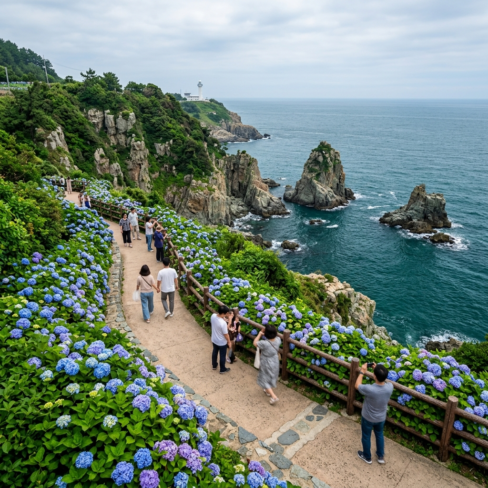
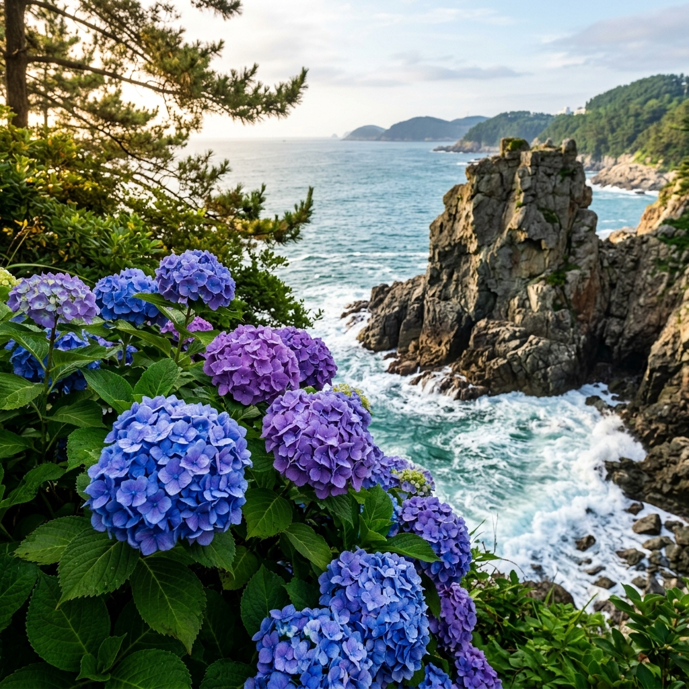
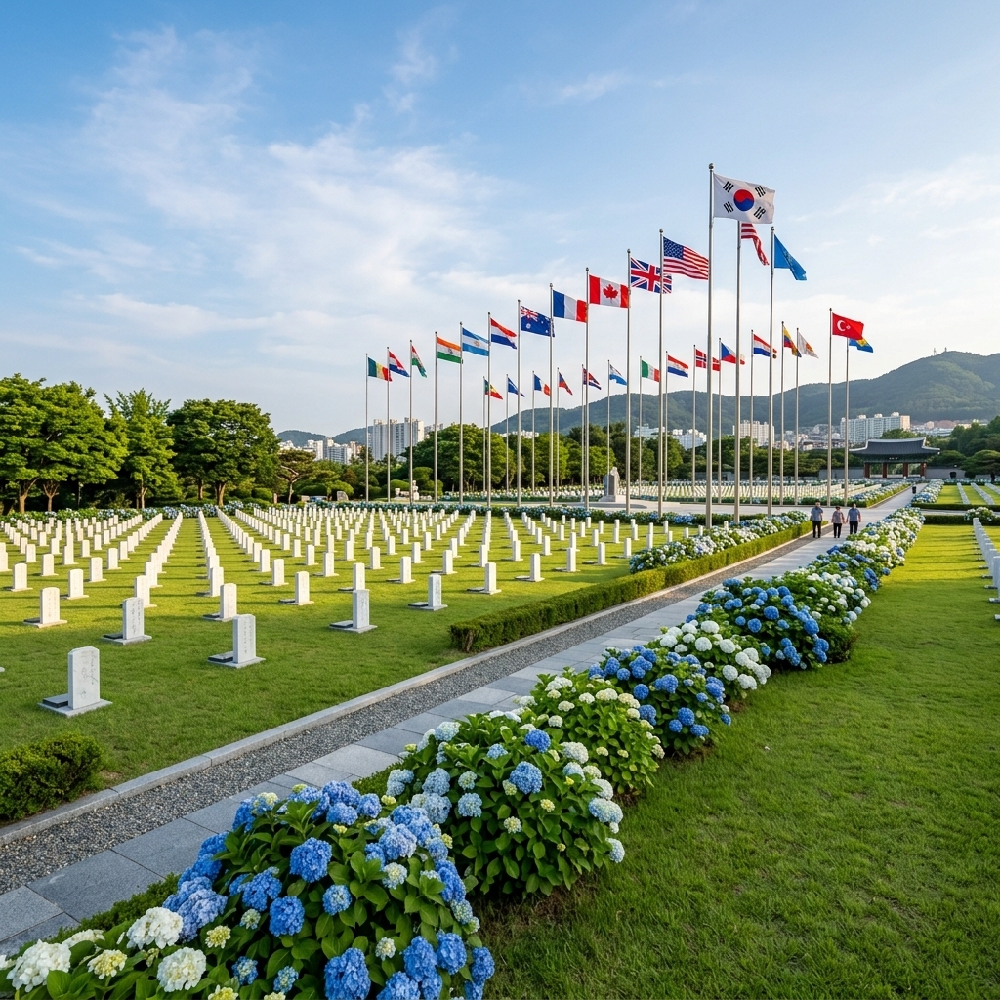

부산 태종대 수국 — 6월 절정기 바닷가 수국 명소와 유엔기념공원 연계 코스
📍 핵심 요약
부산 영도의 태종대는 6월이 되면 해안 절벽을 따라 수국이 만개하면서 전혀 다른 얼굴을 보여 줍니다.
파도 소리와 짭조름한 바닷바람 사이로 보랏빛·파랗빛 수국 군락이 펼쳐지는 이 풍경은, 국내에서도 손꼽히는 '바다와 수국'의 조합입니다.
여기에 같은 날 부산 유엔기념공원까지 연계하면, 호국보훈의 달(6월)과 딱 맞아떨어지는 반나절 코스가 완성됩니다.
이 글에서는 태종대 수국 절정 시기·명당·교통 정보부터 유엔기념공원 연계 방법까지 상세히 안내해 드립니다.
① 태종대 수국, 왜 부산에서 가장 기대되는 6월 꽃길인가
부산 하면 해운대 해수욕장과 광안리를 먼저 떠올리지만, 진정한 현지인의 6월 나들이 목적지로는 영도구 태종대가 꾸준히 거론됩니다.
태종대는 영도 최남단의 해안 공원으로, 해식 절벽과 기암괴석, 그리고 국내 최초의 등대 중 하나인 태종대 등대가 어우러진 경관으로 유명합니다.
그런데 이 공원의 6월이 특별한 이유는 바로 수국입니다.
해안 절벽 산책로 양쪽으로 수국이 군락을 이루며 피어오르는 시기가 6월 초중순이고, 이 시기에는 짙푸른 남해와 흰색·파란색·보라색 수국이 한 화면에 담기는 진귀한 장면을 목격하게 됩니다.
도심 공원에서 보는 수국과는 질감이 다릅니다. 바닷바람을 맞고 자란 탓인지 꽃잎이 유난히 생생하고, 절벽 끝에서 찍은 사진은 마치 외국 어딘가의 해안 정원처럼 보입니다.
수국 군락은 영도 태종대 유원지 내부 순환로 전반에 걸쳐 분포하며, 특히 신선바위로 내려가는 계단 주변과 전망대 인근 산책로에 가장 밀도 있게 자리합니다.

부산 태종대 해안 절벽과 수국 군락 / AI 제작 이미지
② 6월 수국 절정 시기와 개화 현황
태종대 수국은 매년 기상 조건에 따라 약간의 차이는 있지만, 대체로 6월 5일~20일 사이가 절정으로 알려져 있습니다.
부산은 위도상 서울보다 남쪽에 위치해 수국 개화가 1~2주 정도 빠르게 시작되는 편입니다. 그래서 내륙 지역 수국을 보기 전 '먼저 경험하는 수국 여행지'로 부산이 각광받기도 합니다.
6월 초에 방문한다면 수국이 막 피어나는 '청순한 초개화' 단계를 만날 수 있고, 6월 중순 이후에는 꽃잎이 풍성하게 부풀어 오른 '만개' 상태를 감상할 수 있습니다.
올해 방문을 계획 중이라면 태종대 유원지 공식 인스타그램이나 부산관광공사 SNS에서 실시간 개화 정보를 확인하는 것이 가장 정확합니다.
바람이 강한 날에는 꽃잎이 흔들려 사진이 흔들릴 수 있으므로, 맑고 바람이 적은 오전 이른 시간대를 노리는 것이 인생샷 확보에 유리합니다.
③ 태종대 코스별 수국 명당 — 어디서 찍어야 제대로인가
태종대 유원지는 크게 세 가지 방식으로 돌아볼 수 있습니다: 다누비 열차, 도보 산책, 또는 두 가지 혼합 방식입니다.
1. 정문~전망대 구간 (도보 기준 약 25분)
입장 후 정문에서 전망대까지 이어지는 오르막 구간의 양쪽 숲 사이로 수국이 드문드문 피어납니다. 이 구간은 그늘이 많아 여름 초입에도 산책하기 편안합니다.
2. 전망대 주변 (핵심 포인트)
전망대 앞 광장과 계단 난간 주변에 수국이 특히 밀집해 있습니다. 바다를 배경으로 수국 군락을 담을 수 있는 최고의 포인트입니다. 오전 9~11시 사이 빛이 좋을 때 방문하면 역광 없이 선명한 색감을 잡을 수 있습니다.
3. 신선바위 내려가는 계단 구간
가장 가파르지만 가장 극적인 풍경을 자랑합니다. 계단 옆 절벽 위 수국과 아래로 보이는 남해 에메랄드빛 바다의 조합은 태종대에서만 볼 수 있는 구도입니다. 단, 계단이 좁고 경사가 있으니 미끄럼 방지 신발을 착용하시길 권합니다.
④ 다누비 열차 vs 도보 산책 — 나에게 맞는 선택
태종대 유원지 내부를 돌아보는 방법은 두 가지입니다. 다누비 열차를 타거나, 직접 걸어서 순환로를 도는 것입니다.
다누비 열차는 편도 약 5km의 내부 순환로를 왕복 운행하는 꼬마 기차입니다. 입장료(어른 기준 약 2,000원, 실제 요금은 방문 전 확인)는 별도이며, 정류장에서 내렸다 탑승을 반복하는 방식으로 공원을 돌아볼 수 있습니다.
다누비 열차는 체력 부담 없이 어르신이나 아이와 함께 편하게 공원을 즐기기 좋습니다. 다만 수국 사진을 찍기 위해 특정 구간에서 충분한 시간을 갖기 원한다면 도보 산책이 훨씬 유리합니다.
도보 코스는 전체 순환에 약 1시간 30분~2시간이 소요됩니다. 신선바위와 전망대까지 내려가는 코스를 포함하면 추가 30분이 더 필요합니다. 오르막 구간이 있으나 전반적으로 잘 정비되어 있어 운동화로 충분합니다.
💡 추천 조합: 입장 후 다누비 열차로 전체 루트를 한 번 파악하고, 수국이 밀집한 전망대·신선바위 구간에서 내려 도보로 꼼꼼히 산책하는 방식이 시간 대비 가장 효율적입니다.
⑤ 태종대 전망대·신선바위 수국 포인트 상세
태종대의 핵심은 역시 전망대와 신선바위입니다. 이 두 곳은 경관과 수국이 함께 어우러지는 명소이기도 합니다.
전망대는 해발 약 70m 지점에 위치해 있으며, 맑은 날에는 대마도까지 보인다고 전해집니다. 전망대 광장 주변에는 수국이 넓게 펼쳐져 있어 파노라마 구도로 사진을 찍기 좋습니다.
전망대 아래 계단으로 내려가면 신선바위가 나타납니다. 신선바위는 태종 무열왕이 여기서 활을 쏘고 수영을 즐겼다는 전설이 있는 바위입니다. 바위 주변의 해수면은 파도 세기에 따라 에메랄드~짙은 청색으로 변하며, 이 바위와 수국을 함께 담은 사진이 태종대에서 가장 인기 있는 컷입니다.
신선바위 인근에서 6월에 특히 눈여겨볼 것은 절벽 틈새에서 자라는 수국입니다. 인공적으로 심은 것이 아니라 절벽의 습한 바위틈에서 자연 발아한 것들이 일부 포함되어 있어 야생적인 분위기를 물씬 풍깁니다.

신선바위 옆 수국 클로즈업 / AI 제작 이미지
⑥ 유엔기념공원 연계 코스 — 반나절 일정 설계
태종대와 함께 부산 남부권 반나절 코스로 묶을 수 있는 최고의 선택지가 바로 유엔기념공원입니다.
유엔기념공원(부산 남구 유엔평화로 93)은 세계에서 유일한 유엔군 묘지로, 6·25전쟁에서 희생된 21개국 참전용사의 유해가 안장된 곳입니다.
6월은 호국보훈의 달이기 때문에 유엔기념공원에서는 각종 추모 행사와 헌화 이벤트가 열리며, 공원 내 수국도 이 시기에 함께 절정을 이룹니다.
태종대에서 유엔기념공원까지는 자가용으로 약 25분 거리입니다. 대중교통을 이용할 경우 영도에서 시내버스를 타고 대연동 방향으로 이동한 뒤 걸어서 10분이면 도착합니다.
추천 동선은 오전 10시경 태종대에서 수국 감상과 전망대 탐방(약 2시간)을 마친 뒤, 점심 식사 후 오후 1~2시에 유엔기념공원을 방문하는 방식입니다. 유엔기념공원 관람은 천천히 걸어도 1시간 내외이므로 오후 3시쯤이면 부산 시내로 이동해 저녁 식사를 즐길 여유가 생깁니다.
⑦ 유엔기념공원 6월 수국과 호국의 달 분위기
유엔기념공원의 수국은 태종대와는 다른 분위기를 자아냅니다.
넓게 정돈된 잔디밭과 묘역 사이사이에 수국이 열지어 피어 있어, 엄숙하면서도 아름다운 독특한 정서가 있습니다. 꽃이 만발한 공원을 거닐다 보면 추모의 감정과 6월 초여름 자연의 생명력이 묘하게 교차합니다.
공원 내에는 유엔군 위령탑, 무명용사 묘역, 각국 국기게양대가 조성되어 있으며, 입구에서 무료로 안내 지도를 받을 수 있습니다.
6월에는 공원 측에서 '호국의 달 특별 행사'를 진행하는 경우가 많습니다. 헌화식, 추모 음악회, 사진 전시 등 내용은 해당 연도 일정에 따라 달라지니 방문 전 공원 공식 홈페이지(unmck.or.kr)에서 일정을 확인하시길 권합니다.
공원 관람은 무료이며 연중 개방합니다. 복장 규정이 따로 있는 것은 아니지만, 국군 묘지에 준하는 장소인 만큼 지나치게 가벼운 차림은 자제하는 것이 예의입니다.
⑧ 영도 먹거리와 주변 관광 — 일정 마무리 팁
태종대가 있는 영도는 사실 먹거리와 관광 인프라가 꽤 탄탄한 동네입니다.
영도대교 근처 깡통시장(국제시장 인근)과 대교동 일대에는 생선구이·해산물 백반집이 많습니다. 태종대 방문 전 아침 겸 이른 점심으로 해산물 백반을 즐기거나, 방문 후 남항동 쪽에서 간단히 해결하는 방식이 모두 잘 맞습니다.
흰여울문화마을도 태종대에서 멀지 않은 볼거리입니다. 경사진 주거지와 바다를 내려다보는 골목이 어우러진 이곳은 영화 촬영지로도 유명하며, 카페와 소품샵들이 자리해 산책하기 좋습니다.
태종대 출구 인근에는 조그만 음료 매점과 분식 가게들이 모여 있는 작은 먹거리 구역이 있습니다. 수국 산책을 마친 뒤 이곳에서 시원한 음료로 더위를 식히는 것도 나쁘지 않습니다.
시원한 날씨가 전제된다면 태종대→흰여울문화마을→영도대교→자갈치시장으로 이어지는 영도 당일 코스를 완성할 수 있습니다.

부산 유엔기념공원 6월 수국과 묘역 풍경 / AI 제작 이미지
⑨ 주차·대중교통 이용 정보
| 구분 |
내용 |
| 주차장 |
태종대 유원지 제1·2주차장 (유료, 소형차 기준 30분당 약 600원 수준, 실제 요금은 현장 확인) |
| 버스 |
부산역 또는 남포동에서 88번 버스 → 태종대 종점 하차 |
| 지하철 연계 |
지하철 1호선 남포역 → 영도대교 건너 버스 환승 또는 택시 이용 |
| 입장료 |
태종대 유원지 입장 자체는 무료 (다누비 열차 별도 요금) |
| 운영 시간 |
연중무휴, 일출~일몰 기준 (계절별 변동, 방문 전 확인 권장) |
수국 시즌 주말에는 주차장이 만차가 되는 경우가 많습니다. 오전 9시 이전 방문하거나, 부산 도심에서 대중교통으로 이동하는 방식을 적극 권장합니다.
영도는 섬이라 다리 진입 구간에서 정체가 생기기 쉽습니다. 주말 오전 10시 이후에 자가용으로 진입하면 영도대교 방향 교통 체증이 상당할 수 있으니 주의하세요.
⑩ 부산 수국 여행 준비물과 최적 방문 시간
6월 부산의 날씨는 기온이 오르고 습도가 높아지는 시기입니다. 태종대는 해안가여서 체감 기온이 내륙보다 2~3도 낮지만, 정오~오후 2시 사이에는 여전히 강한 햇빛이 내리쬡니다.
방문 최적 시간대는 오전 9시~11시입니다. 이 시간대에는 빛이 부드럽고 방문객이 비교적 적어 사진 찍기도 좋습니다. 오후 늦게 방문하면 역광이 심하고 그늘이 줄어들어 산책이 다소 힘들 수 있습니다.
준비물로는 자외선 차단제, 선글라스, 물 1.5L 이상, 가벼운 재킷(바닷바람 대비)을 챙기시길 권합니다.
수국 사진 촬영 시 꽃잎에 물방울이 맺혀 있는 이른 아침이 가장 아름다운 장면을 연출합니다. 전날 비가 내렸다면 다음 날 오전이 최고의 찰나입니다.
태종대 수국과 유엔기념공원을 하루 일정으로 묶어 6월 호국의 달에 맞게 방문하는 것을 추천합니다. 자연의 아름다움과 역사적 감동을 동시에 경험할 수 있는 부산 최고의 6월 코스입니다.
#부산수국
#태종대수국
#6월부산여행
#태종대
#유엔기념공원
#부산6월
#수국명소
#영도관광
#호국보훈여행
#수도권근교여행